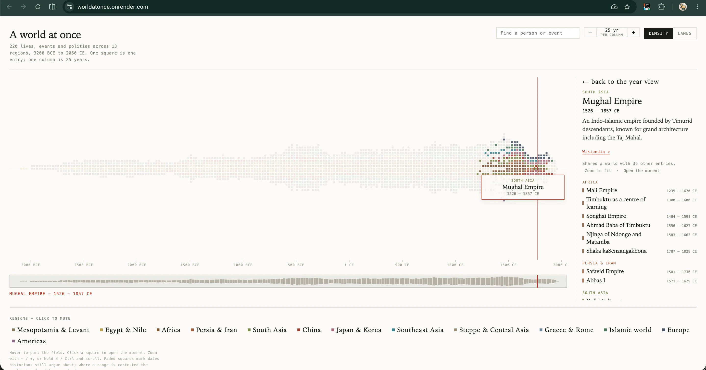
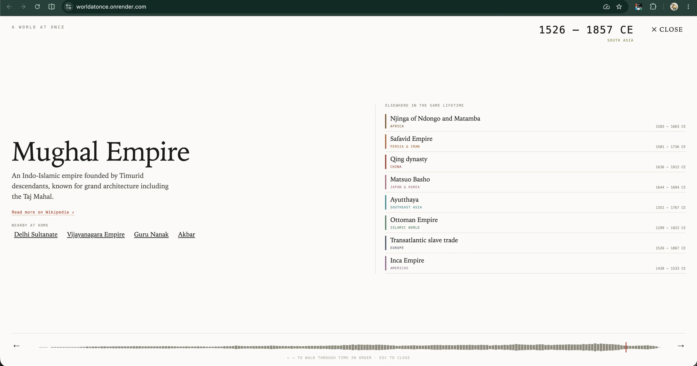
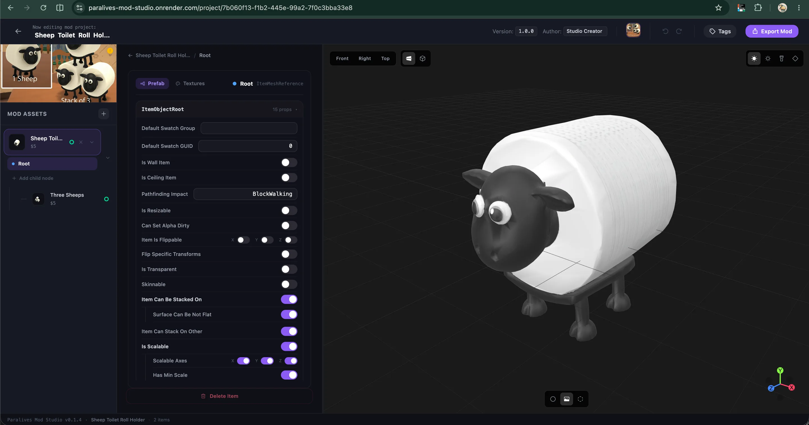
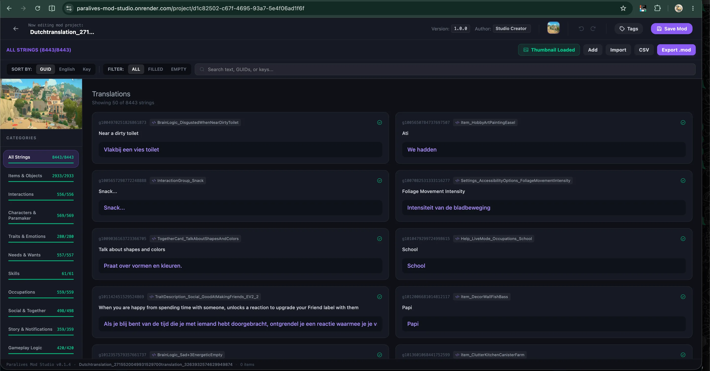
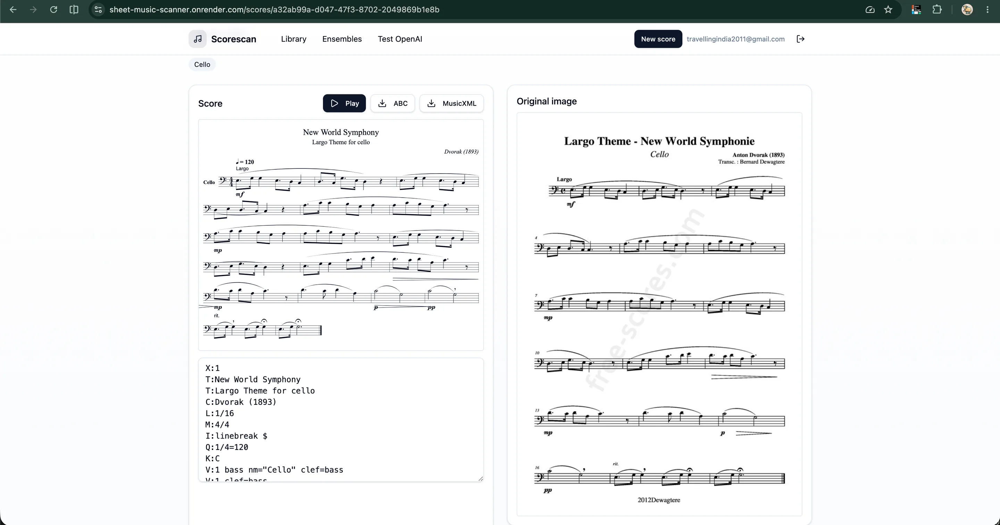
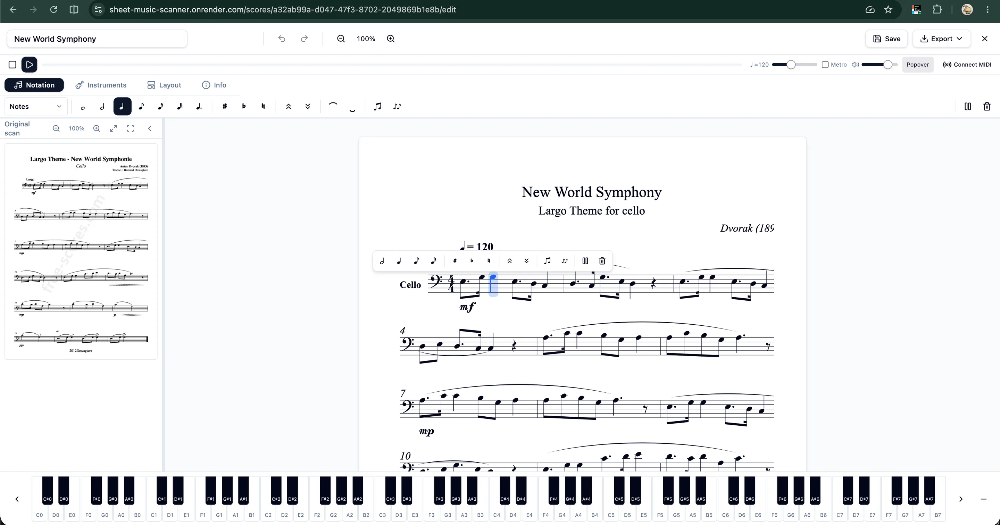

A world at once
I wanted to see timelines of significant events in human history parallel to each other, so I built it with Claude.


AI
I’ve used AI to create a few very different personal projects, here are some examples.
I wanted to see timelines of significant events in human history parallel to each other, so I built it with Claude.


One or two sentences: what is this tool, and why did you build it?


One or two sentences: what is this tool, and why did you build it?


I can also use AI-powered user testing tools to simulate how users might navigate through the interface, helping me identify potential friction points in the user flow. By analysing predicted interactions and behaviour patterns, I am able to spot areas where users might hesitate, get confused, or drop off. This early feedback allows me to iterate quickly and improve the overall experience before conducting live user tests.